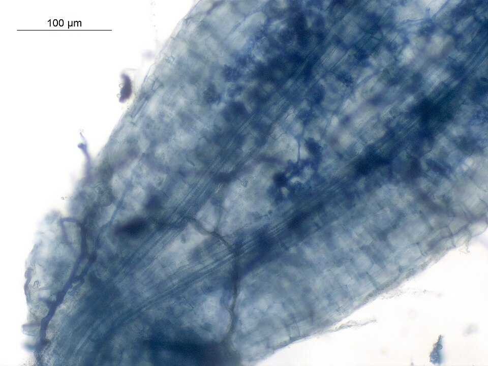
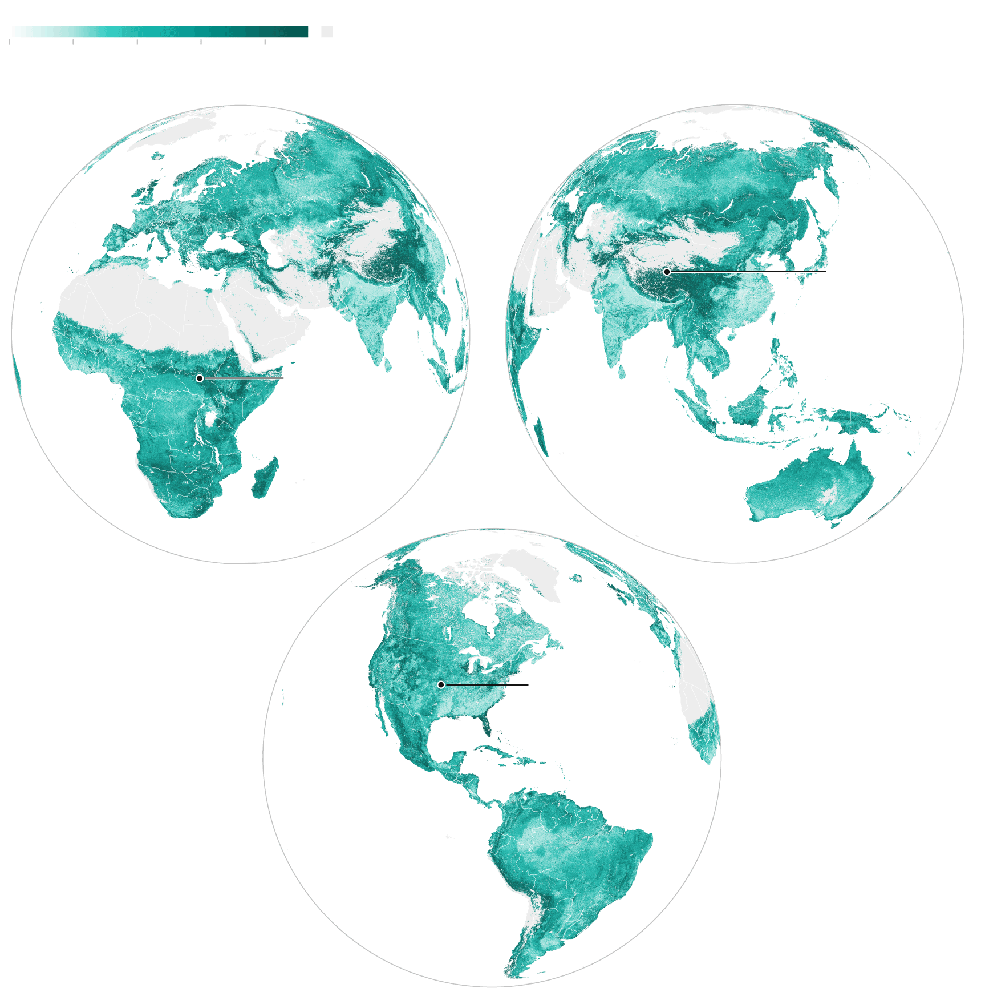
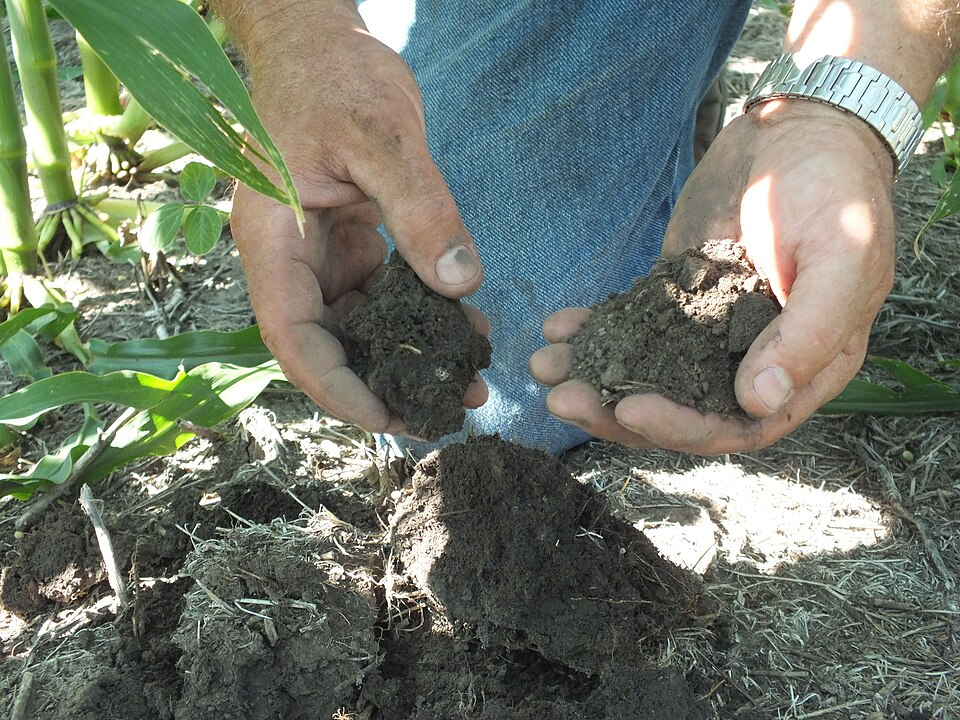

O primeiro mapa global de um mundo que nunca enxergamos
Durante 475 milhões de anos, antes mesmo das plantas colonizarem a terra firme, uma rede silenciosa foi sendo tecida debaixo de nossos pés. São os fungos micorrízicos arbusculares (FMA) — organismos que formam tubos microscópicos chamados hifas e se entrelaçam com as raízes de mais de 70% das espécies vegetais terrestres.
Apesar de sua importância vital, até hoje nenhum mapa global deles existia. Isso mudou em junho de 2026, quando a equipe do SPUN (Society for the Protection of Underground Networks) publicou na revista Science o primeiro atlas global de FMA, produzido com modelos de aprendizado de máquina treinados em mais de 16.000 amostras de solo coletadas ao redor do mundo.
"Pode haver até 10 metros de rede micorrízica em apenas uma colher de chá de solo."
— Dr. Justin Stewart, autor principal do estudo, VU Amsterdam / SPUNComprimento estimado total das redes de FMA nos solos do planeta¹
Equivalência para tornar a magnitude compreensível¹
Base de dados usada para treinar os modelos de IA do estudo¹
Tempo em que FMA e plantas coevoluem juntos na Terra¹
Uma aliança mais antiga que as florestas
Os FMA não são os cogumelos visíveis no cotidiano. São organismos microscópicos que vivem dentro e ao redor das raízes das plantas, formando uma simbiose documentada há mais de 400 milhões de anos — provavelmente anterior à própria colonização da terra pelas plantas vasculares.
Suas hifas — tubos com espessura de milésimos de milímetro — ramificam-se pelo solo ampliando em centenas de vezes a superfície de absorção das raízes, captando fósforo, nitrogênio e água que a raiz sozinha não alcançaria.
Em troca, a planta transfere açúcares produzidos pela fotossíntese. Parte desse carbono é usada pelo fungo para crescer; parte fica retida nas profundezas do solo, fora do ciclo atmosférico.

O ciclo planta–fungo–solo: como funciona a troca
Fotossíntese
A planta captura CO₂ da atmosfera e produz açúcares
Transferência
Até 20% do carbono fixado é direcionado às raízes e aos fungos
Fungo recebe
O FMA usa o carbono para crescer e expandir as hifas no solo
Planta recebe
Nutrientes (P, N) e água chegam à raiz pela rede fúngica
Solo retém
Carbono é depositado em profundidade, longe da atmosfera
📊 Dado complementar — carbono envolvido
Estudo anterior (Hawkins et al., Current Biology, 2023²) estimou que 13,12 bilhões de toneladas de CO₂ equivalente fluem das plantas para os fungos micorrízicos por ano — equivalente a cerca de 36% de todas as emissões globais anuais de combustíveis fósseis. Isso torna o solo, sustentado por esses fungos, o segundo maior reservatório de carbono do planeta, superado apenas pelos oceanos.
Nota: esta estimativa é de estudo independente do mapeamento de 2026; os valores são compatíveis mas produzidos por equipes e métodos distintos.
Campos e pastagens: os guardiões ocultos do subsolo
Um dos resultados mais surpreendentes do estudo foi identificar que os ecossistemas com maior densidade de FMA não são as florestas tropicais, mas as pastagens, campos úmidos e pradarias — ecossistemas frequentemente negligenciados nas políticas de conservação. Segundo o estudo, esses ambientes abrigam aproximadamente 40% de toda a biomassa de FMA do planeta¹.

Locais com maior densidade prevista de hifas
Todos na categoria de pastagens montanas e campos inundados (top 1% global). Valores obtidos dos modelos preditivos do estudo¹.
Planalto Tibetano
China
11,40 m/cm³
Pradaria de Flint Hills
EUA (Kansas)
10,29 m/cm³
Pântanos do Sudd
Sudão do Sul
8,05 m/cm³
Everglades
EUA (Flórida)
Excepcionalmente alta¹
Cerrado Brasileiro
Brasil
>45 spp./100m²³
Encostas de Simien
Etiópia
>45 spp./100m²³
O Cerrado brasileiro figura como um dos principais hotspots de biodiversidade fúngica do mundo, com estimativa superior a 45 espécies de FMA por 100 m² — dado proveniente do mapeamento de biodiversidade do SPUN publicado em 2025³. É uma informação crítica: o Cerrado é um dos biomas mais ameaçados e convertidos em agropecuária do Brasil.
O que estamos destruindo sem saber
O mesmo estudo que revelou a grandiosidade dessas redes documentou a destruição em curso. A comparação entre solos agrícolas e ecossistemas naturais é direta:
⚠️ Dados do estudo — Science, 2026¹
As densidades de redes fúngicas em lavouras são, em média, 47,3% menores do que em ecossistemas naturais equivalentes. Pastagens naturais — com aproximadamente 40% da biomassa global de FMA — estão sendo convertidas em lavouras quatro vezes mais rapidamente do que florestas. E 95% dos hotspots de biodiversidade fúngica estão fora de áreas protegidas.
-
Aração e revolvimento do solo Rompe fisicamente as redes de hifas, que levam anos para se reconstituir. Nas palavras do Dr. Stewart: "você vai ao solo e literalmente o rasga"¹.
-
Fertilizantes sintéticos em excesso Quando nutrientes chegam abundantemente por via química, a planta reduz o investimento de carbono nos fungos — a simbiose é enfraquecida por falta de demanda¹.
-
Fungicidas Aplicados para controlar patógenos fúngicos nas lavouras, também afetam os fungos benéficos do solo sem distinção taxonômica¹.
-
Desmatamento e impermeabilização do solo A conversão de vegetação nativa elimina os parceiros vegetais dos FMA, colapsando a rede pela base da simbiose.
O que se perde quando a rede se rompe
Os pesquisadores alertam que as consequências ultrapassam a produtividade agrícola. Redes fúngicas mais esparsas reduzem a capacidade do solo de reter carbono, a disponibilização natural de nutrientes às plantas e a filtragem de nitrogênio e fósforo antes que alcancem corpos d'água¹.
"Se elas desaparecerem, muito mais produtos químicos vão parar nos rios e lagos."
— Dra. Toby Kiers, autora sênior do estudo e diretora-executiva do SPUN¹Um atlas para proteger o que não se vê
O objetivo central do estudo transcende o diagnóstico científico. Os dados serão apresentados a governos na COP de Desertificação da ONU, em agosto de 2026, na Mongólia, como instrumento para orientar decisões de conservação e uso do solo¹.
🌾 Para a agricultura
Os pesquisadores argumentam que colheitas atuais dependem artificialmente de fertilizantes pesados. Proteger os fungos do solo permitiria às plantas obter mais nutrientes de forma natural, reduzindo gradualmente a dependência de insumos químicos, enquanto os fungos transfeririam mais carbono para as camadas profundas do solo¹.
🌡️ Para o clima
Com bilhões de toneladas de CO₂e passando pelos fungos anualmente², proteger essas redes figura como uma das estratégias de mitigação climática mais subestimadas. Solos com fungos saudáveis tendem a sequestrar mais carbono por períodos mais longos.
🔬 Ferramenta de acesso público
O SPUN lançou o Underground Atlas, plataforma interativa que permite explorar padrões de biodiversidade fúngica em qualquer ponto da Terra com resolução de 1 km. Os dados estão abertos a cientistas, conservacionistas e formuladores de políticas públicas (spun.earth)³.

"Há um grande movimento agora para restaurar não apenas as comunidades acima do solo — as plantas e os animais —, mas também as comunidades fúngicas subterrâneas. Esse conjunto de dados nos oferece parâmetros de referência para o que uma comunidade microbiana saudável pode ser."
— Dra. Toby Kiers, SPUN¹A vida tem uma infraestrutura. Ela está no solo.
Por 475 milhões de anos, a vida em terra firme dependeu de uma parceria invisível. Os fungos micorrízicos arbusculares formam, por analogia, algo que funciona como uma vasta rede de distribuição de recursos: descentralizada, resiliente, construída ao longo de eras geológicas.
A expressão "internet da natureza" é uma analogia de divulgação científica, não uma afirmação técnica sobre as redes fúngicas.
110 quadrilhões de quilômetros. Quase um bilhão de vezes a distância da Terra ao Sol. Tudo isso em cada colher de chá de solo saudável¹.
Agora, pela primeira vez, sabemos onde essa rede está mais densa, onde está mais ameaçada — e o que acontece quando a perdemos. O mapa existe. O que fazemos com ele é nossa escolha.